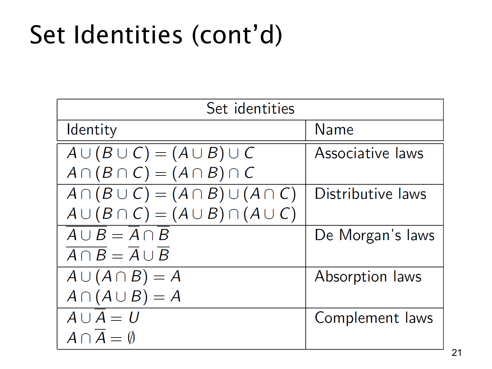

L1.4 · 第 21 页讲解原文
查看这一页课件

集合恒等式续：结合、分配、德摩根、吸收与补集
这一页同样以图片表格列出公式，文字提取层没有表格内容。设 A,B,C 都位于同一个全集 U 中，补集横线也相对于 U。
| 名称 | 原页恒等式 | 含义 |
|---|---|---|
| 结合律 | A∪(B∪C)=(A∪B)∪C；A∩(B∩C)=(A∩B)∩C | 连续求并或连续求交，改变括号不改变结果。 |
| 分配律 | A∩(B∪C)=(A∩B)∪(A∩C)；A∪(B∩C)=(A∪B)∩(A∪C) | 交对并、并对交都可按成员条件分配。 |
| 德摩根律 | A∪B=A∩B；A∩B=A∪B | 否定“在至少一个里”变成“两边都不在”；否定“两边都在”变成“至少一边不在”。 |
| 吸收律 | A∪(A∩B)=A；A∩(A∪B)=A | A∩B 已在 A 内，并回去没有新增；A∪B 已含 A，再与 A 相交只剩 A。 |
| 补集律 | A∪A=U；A∩A=∅ | 全集内每个元素要么在 A，要么不在；不可能同时在与不在。 |
可以用成员条件检验德摩根律第一式：x∈A∪B 等价于 x∈/A∪B，也就是“既不在 A，也不在 B”，这恰好是 x∈A∩B。其他恒等式也可用同一方法把 ∪,∩,A 翻译成“或、且、非”后核对。
这些公式是集合相等，对给定全集内的每个元素都成立；它们不是仅凭文氏图形状猜出的规则。使用补集律和德摩根律时，务必保持全集 U 不变。